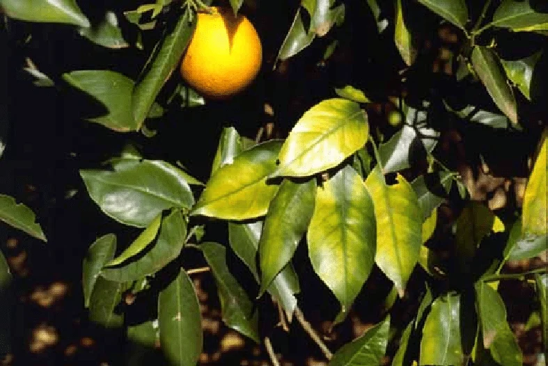

Colégio Politécnico da UFSM · Técnico em Fruticultura EaD · CPFRU060
Origens do pensamento sistêmico e os princípios da abordagem
Unidade 1 · Aula 1 de 4: Por que a recomendação técnica isolada não resolve o problema do pomar
Vivências em Fruticultura I
Prof. Ezequiel Redin · Prof. Róberson Macedo de Oliveira
Unidade 1 · A abordagem sistêmica na fruticultura
Onde esta aula se encaixa
Aula 1
Origens do pensamento sistêmico e os princípios da abordagem: por que precisamos de outro modo de olhar
Aula 2
Sistemas: definição, tipos e componentes de um sistema de produção
Aula 3
Sistemas agroalimentares e cadeias produtivas
Aula 4
Metodologias sistêmicas aplicadas a situações-problema
Ao final das quatro aulas você terá escolhido a unidade de produção que vai acompanhar, desenhado o seu funcionamento e identificado o problema que será o eixo da sua vivência e da sua contribuição ao Polifruti.
Antes de começar
Vivências em Fruticultura I: o objetivo, em vídeo
Uma apresentação da disciplina antes de entrarmos na primeira aula.
▶ Assistir no YouTube ↗
Roteiro de hoje
Três tempos
De onde vem o nosso jeito de pensar
Descartes, a ciência analítica e os limites que ela encontrou no século XX.
O pomar que não respondeu
Um caso do Vale do Caí analisado ao vivo, primeiro pelo olhar fragmentado, depois pelo olhar sistêmico.
O que muda na sua prática
Os cinco pressupostos da abordagem sistêmica e a tarefa que abre a sua vivência.
Tempo 1 · Abertura
Comecemos por uma cena conhecida
Um fruticultor relata queda de produtividade no pomar. Chega o técnico, avalia a cultura, identifica deficiência nutricional e recomenda a correção da adubação.
A recomendação está tecnicamente correta. Um ano depois, nada mudou.

Sintoma de deficiência nutricional em citros.
Se o diagnóstico estava certo, por que a solução não funcionou?
Tempo 1
O método que aprendemos sem perceber
Desde o século XVII o pensamento ocidental se organiza sobre uma concepção de ciência chamada analítica ou cartesiana. René Descartes a sintetizou no Discurso do Método (1637) em quatro princípios:
Princípio 1
Evidência
Aceitar como verdadeiro apenas aquilo que é comprovadamente verdadeiro.
Princípio 2
Redução
Dividir as dificuldades em partes mais simples.
Princípio 3
Ordem
Estudar um problema pela parte de mais fácil solução.
Princípio 4
Exaustão
Estudar os desdobramentos de um problema até esgotá-los.
Tempo 1
Isso não é um erro. É uma escolha com custo
O que essa concepção entregou
As grandes descobertas científicas modernas
O melhoramento genético e as cultivares que você maneja
Defensivos, fertilizantes, mecanização
A própria organização das disciplinas que você cursa
A história e a trajetória daquela unidade de produção
A abordagem sistêmica não substitui a disciplinar. Como observa Pinheiro, a disciplinaridade é pré-requisito da multidisciplinaridade. O problema é usar só uma delas quando o problema pede as duas.
Tempo 1
A virada do século XX
Por muito tempo, avançar na ciência foi sinônimo de dividir: encontrar a menor peça, o tijolo a partir do qual tudo o mais poderia ser explicado.
Foi assim que se chegou à molécula, ao átomo, à partícula. Mas quanto mais fundo se cavou, mais organização e mais interação se encontrou, e não a peça simples que se procurava.
O próprio método de dividir para entender revelou o seu limite: dividir demais faz perder de vista como as partes se relacionam. E é a relação, não a peça isolada, que explica o comportamento do conjunto.
Tempo 1
Uma palavra antiga para uma ideia nova
Sistema vem do grego synhistanai: colocar junto.
A partir da Teoria Geral de Sistemas de Bertalanffy, o pensamento sistêmico se espalhou por áreas distintas: física, biologia, comunicação, psicologia, medicina e, mais tarde, a agricultura.
Bertalanffy (biólogo): teoria geral de sistemas
Shannon e Weaver (engenheiros): teoria da informação
Prigogine (físico): estruturas dissipativas, complexidade e caos
Bateson (antropólogo): epistemologia dos sistemas e retroalimentação
Maturana (biólogo): biologia do conhecer e autopoiese
Geração fundadora, dos anos 1940 aos 1970. O campo continuou: hoje se fala de resiliência e de sistemas socioecológicos, ideias que voltam quando o assunto é seca, enchente e adaptação.
Tempo 1
A abordagem sistêmica na agricultura, em vídeo
Antes de aplicar a ideia de sistema ao caso do pomar, um resumo de como ela chega até a agricultura.
▶ Assistir no YouTube ↗
Tempo 2
O pomar de bergamota que não respondeu
Vale do Caí, principal região citrícola do Rio Grande do Sul. Municípios como Montenegro, São Sebastião do Caí, Harmonia e Bom Princípio, com predomínio de agricultura familiar e pomares tradicionais de bergamota e laranja.
Foto ilustrativa. Brian Jimenez / Wikimedia Commons, domínio público (CC0).
Tempo 2 · O caso
A propriedade da família Scherer
O que se vê na visita
12 hectares, sendo 6 de pomar de bergamota Montenegrina
Pomar com mais de 25 anos, plantas altas, entrelinhas fechadas
Também há horta comercial, algumas vacas de leite e milho para silagem
Casal com 58 e 55 anos; o filho trabalha na cidade
O que o produtor relata
“A bergamota já foi melhor. Hoje rende pouco”
Fruta pequena, com alternância forte entre safras
Poda feita “quando dá tempo”, geralmente atrasada
Vende para atravessador; preço definido na hora da entrega
“Teve o granizo, e depois dois anos de seca. A gente não recuperou”
Antes de qualquer análise: qual seria a sua primeira recomendação técnica?
Tempo 2 · Primeira leitura
O olhar fragmentado, e o que ele produz
Quem olha
O que vê
O que recomenda
Especialista em nutrição
Análise foliar deficiente
Corrigir a adubação
Especialista em fitossanidade
Presença de mosca-das-frutas
Programa de monitoramento e controle
Especialista em manejo
Pomar adensado, sem poda
Poda de renovação e raleio de plantas
Especialista em mercado
Venda dependente de atravessador
Buscar canal direto ou cooperativa
Cada recomendação está correta em si. Somadas, exigem mais capital, mão de obra e tempo de gestão, exatamente o que a família não tem. Nenhuma será executada.
É o impasse que Pinheiro descreve: orientações desenvolvidas em ambientes controlados, muitas vezes divergentes entre si, disputando os mesmos recursos escassos.
Tempo 2 · Segunda leitura
O olhar sistêmico: o que estava fora do enquadramento
Trabalho. A poda atrasa porque coincide com o pico da horta, que paga o mês; o pomar rende só uma vez por ano.
Sucessão e renda de fora. O filho não vai assumir; salário e aposentadoria já pesam mais que a bergamota na decisão de investir.
Clima. Depois de granizo e estiagem, não descapitalizar é gestão de risco de quem não tem seguro, não falta de técnica.
Poder na cadeia. Atravessador paga menos mas na hora; cooperativa paga mais mas atrasa. Com pouco caixa, previsibilidade vence preço (aula 3).
Trajetória. O pomar foi dimensionado para uma família maior, que não existe mais.
A queda de produtividade não é a doença. É o sintoma de um sistema de produção que perdeu o ajuste entre os seus componentes e os objetivos de quem o conduz.
Tempo 2 · A armadilha
O círculo que se fecha sozinho
Repare que as causas do problema também são efeitos dele. O sistema alimenta a si mesmo.
Pomar envelhecido e adensado
→
Fruta pequena, alternância entre safras
→
Receita baixa e imprevisível
→
Sem caixa para poda, renovação e mão de obra
↺e o pomar envelhece mais um ano
Isso é retroalimentação: a saída do sistema volta como entrada e reforça o estado em que ele já está. Quando o efeito é esse, cada volta do ciclo agrava o problema, e o tempo passa a trabalhar contra a família.
Consequência prática: não existe recomendação técnica isolada capaz de romper um ciclo. É preciso identificar onde o círculo pode ser cortado com os recursos que a família realmente tem. Na aula 2 damos nome e desenho a esse mecanismo.
Tempo 2 · O ponto decisivo
O agricultor não está errado
“Os agricultores, como todos os indivíduos, têm comportamento racional, e verifica-se uma notável coerência entre os objetivos que eles buscam alcançar e os meios por eles operacionalizados.”
Brossier (1987), citado por Miguel
Há coerência nos atos do agricultor mesmo quando as suas ações não estão em consonância com a recomendação técnica ou com a busca da eficiência produtiva.
Se a decisão do produtor é coerente com os objetivos dele, o que exatamente o técnico tem a oferecer?
Guarde essa pergunta: ela não se responde hoje, é o objeto da aula 4. Mas a direção já dá para adiantar. O técnico deixa de ser quem traz a solução certa e passa a ser quem ajuda a família a enxergar o próprio sistema e a decidir onde mexer primeiro, dentro do que ela tem.
Tempo 3
Os cinco pressupostos da abordagem sistêmica
01
Interação
A ação entre elementos é recíproca. Não é só A sobre B: é A sobre B e B sobre A.
02
Complexidade
Não confundir com complicação. Depende da quantidade de elementos e dos tipos de relação entre eles.
03
Totalidade
O conjunto não pode ser compreendido apenas pelas partes isoladas.
04
Hierarquia
Há escalas de abrangência. Subindo na escala, os sistemas ficam mais complexos.
05
Organização
Tem um lado estrutural (o arranjo) e um lado funcional (o que faz o sistema operar).
Tempo 3
Três definições que vamos usar no semestre
“Um complexo de elementos em interação.”
Bertalanffy, 1976
“Um objeto complexo, de estrutura global, formado por componentes distintos e em interação mútua e dinâmica, ligados entre si por certo número de relações e organizados em função de um objetivo.”
Rosnay, 1975
“Certo número de componentes que interagem, que operam conjuntamente para alcançar um propósito comum, e capaz de reagir como um todo aos estímulos externos.”
Spedding, citado por Mettrick, 1994
Tempo 3
Como o Consórcio Muda o Comportamento das Plantas
“O todo é superior ao todo, o todo é inferior ao todo.”
Morin, 1977, p. 122
Superior: o pomar consorciado produz efeitos que nenhuma planta isolada produziria: sombreamento, ciclagem, quebra-vento, refúgio de inimigos naturais.
Inferior: o mesmo pomar impõe restrições a cada planta que ela não teria sozinha: competição por luz, água e nutrientes, dificuldade de mecanização.
Consórcio de cafeeiro e citros. Foto ilustrativa: USFWS / Wikimedia Commons, domínio público.
O comportamento do conjunto é diferente da soma dos comportamentos das partes. Nem melhor, nem pior: diferente.
Tempo 3
Em que escala você vai trabalhar
Todo sistema está contido em outro maior e contém outros menores. Definir a escala é a primeira decisão metodológica de qualquer diagnóstico.
Planeta
País
Região: o Vale do Caí, a Serra Gaúcha, a Campanha
Unidade de produção agrícola: a escala da sua vivência
Lavouras e rebanhos: o pomar, a horta, o rebanho leiteiro
Plantas e animais
Células
Tempo 3 · Fechamento
O que muda na sua prática de técnico
Antes de recomendar, entender o funcionamento. O que parece erro técnico costuma ser ajuste a uma restrição que você ainda não enxergou.
Perguntar pelos objetivos da família, não só pelos indicadores da cultura. Eles definem o que é uma boa solução.
Reconstituir a trajetória. A UPA de hoje é resultado de decisões passadas que ainda operam.
Verificar se a recomendação cabe nos fatores de produção disponíveis: terra, trabalho e capital.
Assumir que a sua recomendação desloca recursos de outro subsistema. Sempre.
Ponte para a vivência
Ficha da UPA: entrega desta aula
Escolha a unidade de produção que você vai acompanhar ao longo da disciplina.
Poste no fórum, em até uma página, assim toda a turma já sabe quem vai visitar o quê antes de formar os grupos do vídeo, na aula 5. Vale 5% da nota final.
Município e localidade
Quem conduz a propriedade e qual a composição da família
Quais atividades existem ali, incluindo as que não são fruticultura
Por que você escolheu essa unidade
Uma pergunta que você ainda não sabe responder sobre ela
Esta escolha é definitiva. Ela será a base do seu vídeo da Unidade 2 e da sua contribuição ao Polifruti. Escolha uma unidade a que você tenha acesso real e recorrente.
Próxima aula
Aula 2. Sistemas: tipos, componentes e limites
Vamos descer da teoria geral para a unidade de produção agrícola e aprender a desenhá-la: subsistemas de cultivo, de criação e de transformação, entradas, saídas, fronteiras e retroalimentação.
Referências
Para aprofundar
Leituras da unidade
PINHEIRO, S. L. G. O enfoque sistêmico e o desenvolvimento rural sustentável: uma oportunidade de mudança da abordagem hard-systems para experiências com soft-systems.
MIGUEL, L. A.; MAZOYER, M.; ROUDART, L. Abordagem sistêmica e sistemas agrários. In: MIGUEL, L. A. (Org.). Dinâmica e diferenciação de sistemas agrários. Porto Alegre: Editora da UFRGS, 2009.
BERTALANFFY, L. von. Teoria geral dos sistemas. Petrópolis: Vozes, 1976.
BROSSIER, J. Système et système de production: note sur ces concepts. Cahiers des Sciences Humaines, Paris, v. 23, n. 3-4, p. 377-390, 1987.
CAPRA, F. O ponto de mutação. São Paulo: Cultrix, 1982.
Referências
Para aprofundar: continuação
CHURCHMAN, C. W. Introdução à teoria dos sistemas. 2. ed. Petrópolis: Vozes, 1972.
DURAND, D. La systémique. Paris: PUF, 1990.
MIGUEL, L. A. A abordagem sistêmica da unidade de produção agrícola. Porto Alegre: UFRGS/PGDR.
MORIN, E. O método 1: a natureza da natureza. Porto Alegre: Sulina, 1977.
ROSNAY, J. de. Le macroscope: vers une vision globale. Paris: Seuil, 1975.
SCHNEIDER, S. A pluriatividade na agricultura familiar. Porto Alegre: Editora da UFRGS, 2003.
WAGNER, S. A.; GIASSON, E.; MIGUEL, L. A.; MACHADO, J. A. D. (Org.). Gestão e planejamento de unidades de produção agrícola. Porto Alegre: Editora da UFRGS, 2010.
WALKER, B.; SALT, D. Resilience thinking: sustaining ecosystems and people in a changing world. Washington: Island Press, 2006.
Material organizado com apoio de inteligência artificial (Claude, Anthropic), a partir da experiência de quatro semestres da disciplina. Declaração completa de uso de IA.
Unidade 1 · Aula 1: Pensamento sistêmico1 / 25Vivências em Fruticultura I